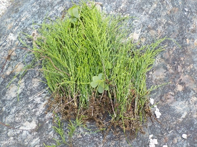
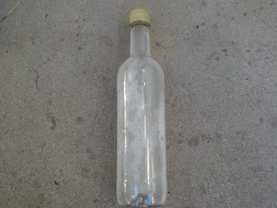
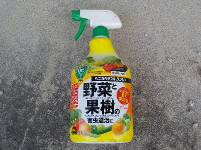
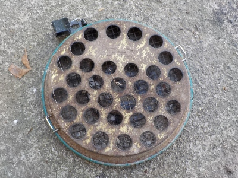
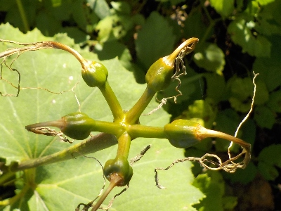
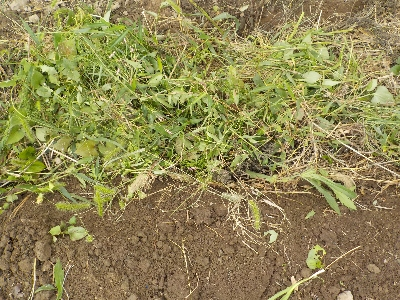
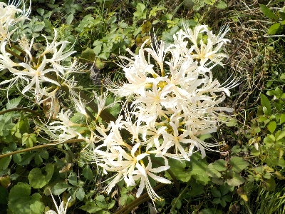

遊びで植物を育てよう
2024/10/26
スギナがにょきにょきと出るので抜きました。

秋で過ごしやすくなったのか、スギナがにょきにょき発生しています。
冬になったら枯れるとは思いますが、暖冬で枯れない可能性もあるし、今栄養を蓄えたら春に大量に発生しそうなので抜きました。
1週間後にはまたスギナが生えているんだろうな。そしてまた抜くんだろうな。
【10月TOP】
【日記TOP】
【園芸TOP】
2024/10/26
納豆菌を砂糖と水で増殖させてました。

納豆菌はいいって聞くので作ってまきました。
本当に効果があるのかな？効果があっても効果があったってわからないんじゃないのかなーと思いながらやりました。
納豆菌はそもそも自然に存在しているので、あえて添加する必要なんてないんじゃないの？って思うんですよね。
でもまあ植木鉢には納豆菌がいないかもしれないので、そこに使うのはいいかな。
【10月TOP】
【日記TOP】
【園芸TOP】
2024/10/20
ベニカベジフルスプレーが壊れました。

長年詰め替えながら使っていたベニカベジフルスプレーの押す部分が壊れました。
お疲れさまでした。
100均とかで新しく買ってもいいですが、何かで空いたスプレーに詰め替えを入れて使おうかと思っています。
【10月TOP】
【日記TOP】
【園芸TOP】
2024/10/12
まだまだ蚊取り線香が必要でした。

10月なのでもう使わないでも大丈夫かなと思ってましたが、顔の近くをブンブン飛び回るので蚊取り線香を点けました。
屋外なので煙はよそに流れていきますが、あると安心して作業ができていいです。
【10月TOP】
【日記TOP】
【園芸TOP】
2024/10/12
ヒガンバナのタネってやっぱり出来ないのかな？。

これは白い彼岸花（シロバナマンジュシャゲ）ですが、植えてある場所からちょっと離れたところに新しく生えたりしてるんですよね。
球根をネズミやモグラがほり起こしてそれを鳥とか別の生き物が運べば可能ですが、そんなことするかな？
【10月TOP】
【日記TOP】
【園芸TOP】
2024/10/06
刈り取った雑草を土に埋めました。

いつもは雑草を積み上げて放置したり草抑えでバラまいていましたが、近くで丁度いいスペースがなかったので穴を掘って埋めました。
穴掘るのが面倒でやっていなかったですが、畑だと土が固くないので簡単ですね。
畑の草はドンドン埋めてしまおうと思いました。
【10月TOP】
【日記TOP】
【園芸TOP】
2024/10/06
10月にヒガンバナが開花するのはなかなかないかも。

これだけじゃなくて付近のあちこちで今頃ヒガンバナが咲いています。
時期がずれていますが、ふだんよりなんかキレイに見える。自分の家だけじゃなくて、付近のヒガンバナも赤も白もいつもよりきれいな気がする。
【10月TOP】
【日記TOP】
【園芸TOP】
過去の日記
【2023年10月の日記】
【2022年10月の日記】
【2021年10月の日記】
【2020年10月の日記】
【2019年10月の日記】
【2018年10月の日記】
【2017年10月の日記】
【2016年10月の日記】
【2015年10月の日記】
【2014年10月の日記】
【2013年10月の日記】
【2012年10月の日記】
【10月TOP】
【日記TOP】
【園芸TOP】
畑仕事じゃないよ。
【おいしいものを食べよう。】【たくさん寝よう。】
【ソロ活をしよう!】【季節感のあることをしよう。】【動画視聴はほどほどに。】【当サイトの全てのコンテンツは無断転載禁止です。】